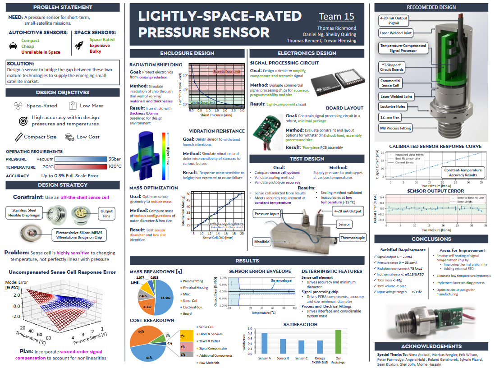
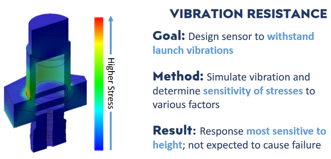
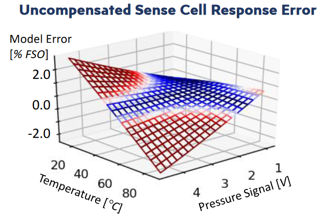
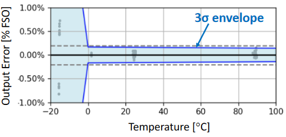

Background & Objective
In their final year at UBC, engineering students pariticpate in a Capstone project, a project which takes place with a real
company and intends to produce a real product or prototype. The project is meant to engage students in the entire engineering
design process, from stakeholder consulation to requirements generation, concept generation to prototyping, and analysis to validation.
While teams generally form and choose projects in September, my team formed the April prior, and reached out to a client during the summer.
Our client tasked us with developing a pressure sensor for use short-term use aboard a satellite or similar spacecraft.

The project was intended to address a market gap emerging alongside a revolution in satellite technology. Over the last decade or so,
satellites have become much easier to launch, which has given rise to "small-satellites": small, short-mission satellites that can be cheaply
produced, launched and iterated upon. For such projects, there is a lack of sensor options. Traditional space-rated sensors generally have
long lead times, high costs, and feature more robustness and mass than is necessary for shorter-term missions. Automotive pressure sensors
are cheaper and more compact - desirable qualities for small-satellite applications - but lack the necessary features for reliable sustained
operation in harsh space environments. The purpose of this project was to design a sensor to bridge the gap between these two mature
technologies to supply the emerging small-satellite market.
Development and Challenges
The project spanned the entire design process, and as such, as I had a multitude of roles throughout the project. I will detail some
of the most meaningful and challenging experiences.
Vibration Analysis
A standard requirement of space-rated sensors is the ability to withstand the vibration environment they will be exposed to during launch.
These vibration environments are quite extreme, and special care must be taken to identify and resolve any potential vibration-induced failure
modes. I took responsibility for performing the random vibration analysis for the project.
I began by familiarizing myself with relevant theory for vibration analysis, such as interpreting Power Spectral Densities plots and using
Laplace transforms to compute stress responses in simple structures. Once I had familiarized myself with the theory, I created a MATLAB
script to calculate the vibration response of a simplified version of the sensor, iteratively adding complexity as I was able.
Once I had reached the peak complexity that could be analyzed by manual calculations, I moved on to random vibration simulation.
Using SOLIDWORKS, I first recreated the simplified sensor and performed a simulation, whose inputs matched those of the MATLAB script.
After corroborating results and determining I was performing the simulations correctly, I performed the simulation on the detailed
model of the sensor. Using the results of this analysis, I was able to determine the parameters most influencing the vibration response
of the sensor, and identified possible failure paths and modes to be resolved.

Testbench Design
One of the key requirements for the second was thermal and baric compensation, for which a second-order compensation scheme was needed.
Without compensation, the sensor would produce highly inaccurate readings near its operational limits, which is visualized below.

To enable testing, I constructed a testbench which used a LabJack to collect data. I soldered thermocouple and pressure sensor connections
onto perfboards, and connected them to the LabJack. I also added strain reliefs and other mechanical features to the testbench, which prevented
the lead-ends of the connections from being damaged. Once the testbench was constructed, we connected it to various points along a manifold and
collected data at different temperature and pressure points; this data was used to produce a second-order fit for the compensator to use.
Ultimately, the second-order compensation scheme was mostly succesful, bringing measurement error within project requirements. This could not
be validated at lower temperatures, due to formation of ice and a lack of time to resolve this issue.

Harness Design
Several pressure transducers were tested throughout the course of this project. One such transducer measured just 9mm in diameter, and required
a custom harness to interface with the testbech. I constructed this harness using a set of crimps held in place by a 3D-printed frame. This
required carefully designing features on the frame, since the 3D printer was limited in its capacity to produce fine details, and the frame was
quite small and weak due to size constraints. The result was a "snowflake-like" frame, which had radial insertion lines and ridges to hold the
crimps in place once inserted.
Finally, wires were soldered to the crimps, and the construction was held together by heat shrink. The harness was succesfully able to interface
the sensor with the testbench, allowing for smooth data aquisition to take place.
Achievement
Ultimately, the project was highly succesful. Thanks to our combined strong presentation, details-focused design, and effective documentation,
our team was awarded the Capstone Project Award among our cohort. I also received a 95% score in the class.

I learned a great deal of practical and technical skills throughout the project. I learned a great deal about random vibrations, and how
to use SOLIDWORKS and hand calculations to analyze them for failure modes. I learned about test bench design and data analysis techniques.
I also learned about mechanical design principles which have helped me become a more well-rounded engineer.


 Project Poster, IPPW 2019
Project Poster, IPPW 2019